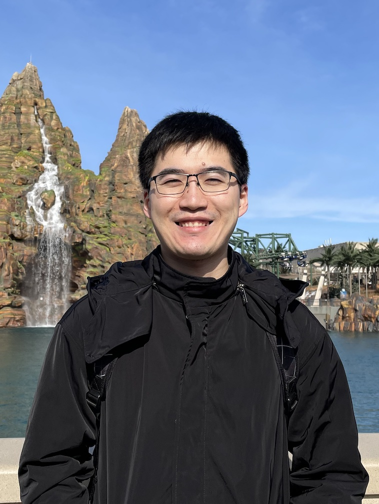
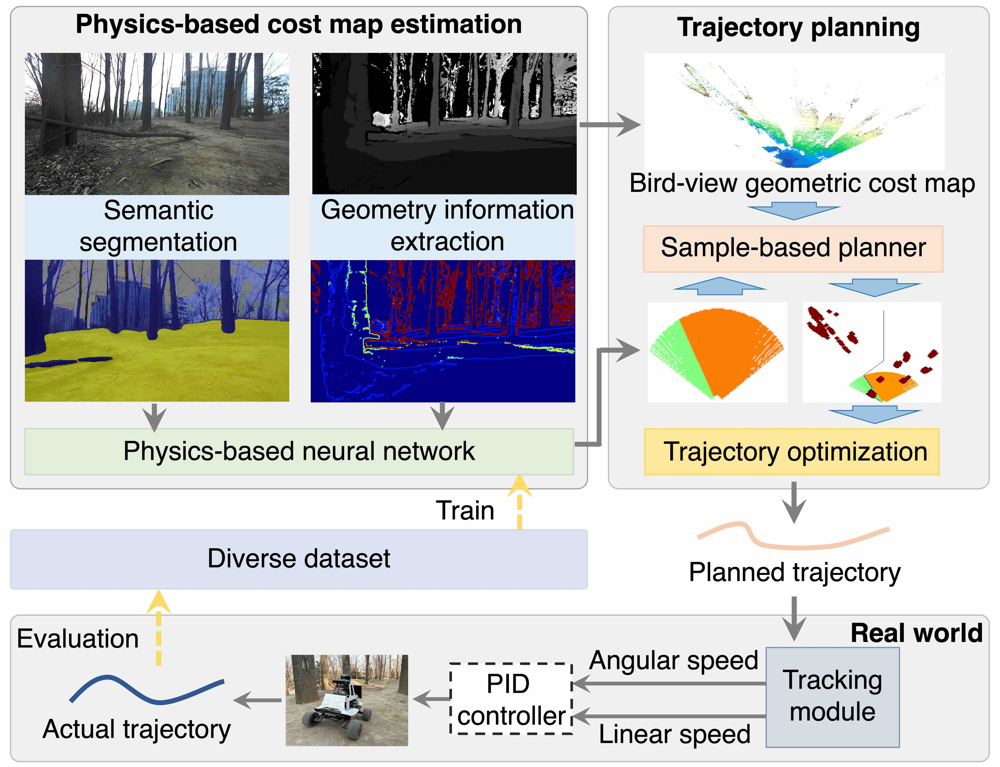
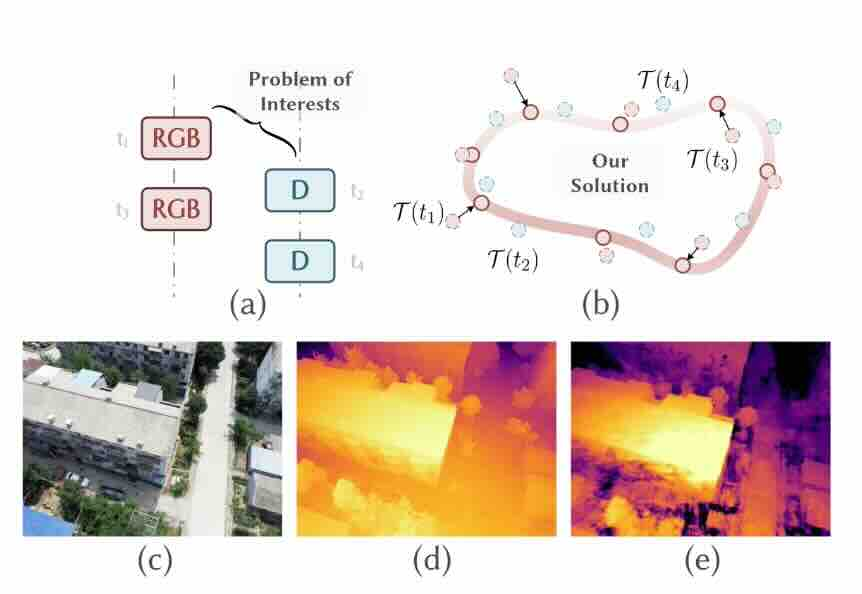
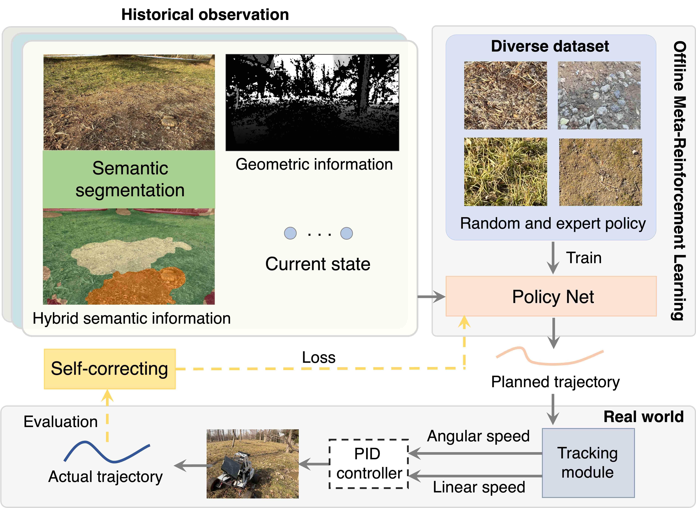
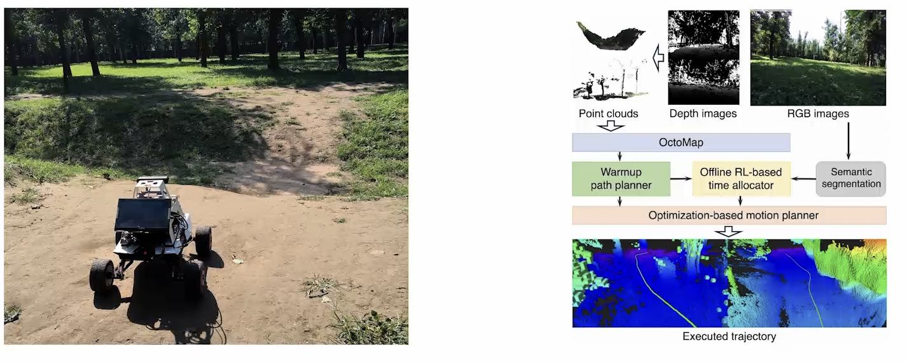
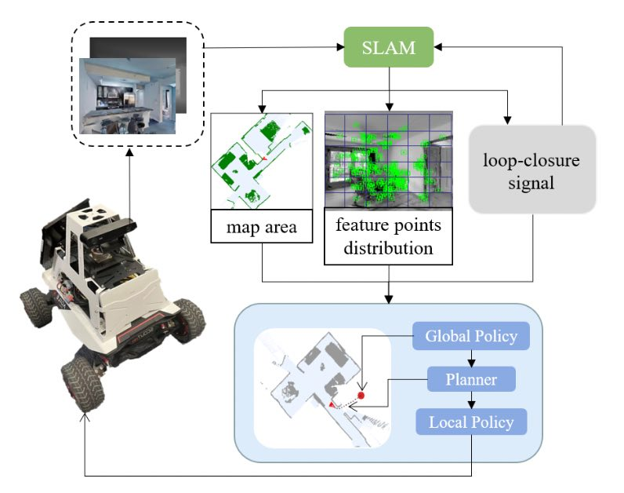
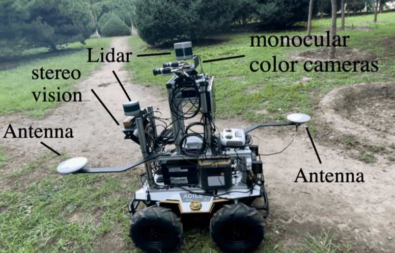
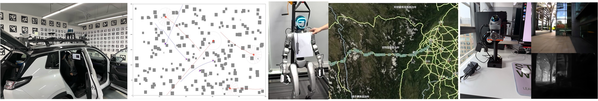

Andong Yang
Hi there! I am a postdoctoral researcher developing multi-robot systems to solve problems that cannot be addressed by a single robot.
Thank you for your interest! I am a postdoctoral researcher at Tsinghua University, working with Professor Lu Fang and Professor Chao Gao. I received my PhD from the Institute of Computing Technology, Chinese Academy of Sciences, where I was jointly supervised by Professor Yu Hu and Professor Wei Li. I enjoy building new robots and exploring algorithms that make them more capable and intelligent. My research involves physical intelligence, decentralized coordination, and motion planning in multi-robot systems.
Andong Yang is a postdoctoral researcher at Tsinghua University, working with Professor Lu Fang and Professor Chao Gao. He obtained his PhD from the Institute of Computing Technology, Chinese Academy of Sciences, under the supervision of Professor Yu Hu. His research focuses on motion planning and control in robotics, with an interest in building machines and algorithms that enable robots to intelligently operate in challenging environments. Andong has published papers in leading robotics conferences and journals, including IROS, ICRA, and RA-L. He has also served as a reviewer for ICRA and RA-L and has been awarded the Academic First Class Scholarship.
Formal Bio Github G. Scholar LinkedIn
Internship opportunities are available, and I'm always open to collaboration. Feel free to contact me: andongyang24@gmail.com

Education and Academic Positions
- Mar 2025 - Present Postdoc, Tsinghua University, Beijing
- Jun 2019 - Jan 2025 Ph.D., Institute of Computing Technology, Chinese Academy of Sciences, Beijing
- Sep 2015 - Jun 2019 B.Eng., Dalian University of Technology, Dalian
Professional Services
- Reviewer, IEEE Transactions on Robotics (TRO)
- Reviewer, IEEE Robotics and Automation Letters (RA-L)
- Reviewer, IEEE International Conference on Robotics and Automation (ICRA)
- Reviewer, IEEE/RSJ International Conference on Intelligent Robots and Systems (IROS)
- Teaching Assistant, Computer Architecture
- Member, Career Development Association, ICT, CAS
- Member, Student Union, University of Chinese Academy of Sciences
Honors and Awards
- Second Prize in Obstacle Avoidance and Highway Driving, World Intelligent Driving Challenge, 2022
- Academic First-Class Scholarship, ICT, Chinese Academy of Sciences, 2020, 2021, 2022
- Merit Student, ICT, Chinese Academy of Sciences, 2022, 2023

Vibration-Aware Trajectory Optimization for Mobile Robots in Wild Environments via Physics-Informed Neural Network
Aochun Xu†, Andong Yang†, Wei Li,Yu Hu
IEEE/RSJ International Conference on Intelligent Robots and Systems (IROS) 2025
Accepted

Self-Aligning Depth-Regularized Radiance Fields for Asynchronous RGB-D Sequences
Yuxin Huang, Andong Yang, Yuantao Chen, Runyi Yang, Zhenxin Zhu, Chao Hou, Hao Zhao, Guyue Zhou
Proceedings of the Winter Conference on Applications of Computer Vision (WACV) 2025
★ Oral ★
Code •
PDF

SCOML: Trajectory Planning Based on Self-Correcting Meta-Reinforcement Learning in Hybrid Terrain for Mobile Robot
Andong Yang; Wei Li; Yu Hu
IEEE/RSJ International Conference on Intelligent Robots and Systems (IROS) 2024
PDF

F3DMP: Foresighted 3D Motion Planning of Mobile Robots in Wild Environments
Andong Yang; Wei Li; Yu Hu
IEEE International Conference on Robotics and Automation (ICRA) 2024
PDF
Speed Planning Based on Terrain-Aware Constraint Reinforcement Learning in Rugged Environments
Andong Yang; Wei Li; Yu Hu
IEEE Robotics and Automation Letters (RA-L) 2024
PDF

Active Visual SLAM Based on Hierarchical Reinforcement Learning
Wensong Chen; Wei Li; Andong Yang; Yu Hu
IEEE/RSJ International Conference on Intelligent Robots and Systems (IROS) 2023
PDF

SMS-MPC: Adversarial Learning-based Simultaneous Prediction Control with Single Model for Mobile Robots
Andong Yang; Wei Li; Yu Hu
IEEE/RSJ International Conference on Intelligent Robots and Systems (IROS) 2022
PDF
Mobile Robot Systems in Challenging Environments
Motion planning and control in forests and plateaus. F3DMP and SCOML frameworks.
Self-Driving Car for Plateau Environment
Autonomous driving without HD maps using LiDAR, cameras, and GPS.
Air-Ground Collaborative Exploration Systems
Heterogeneous UAV and ground robots for large-scale exploration. ongoing
Pure Neural Drone Flying with Optical Chip
End-to-end neural flight stack replacing traditional planning and PX4 pipelines.
Underwater Robot Sonar Denoising
Sonar-based object detection with domain-space alignment and a new dataset.
Coordinate Humanoid Whole Body Control
RL whole-body control for Unitree G1 and custom humanoid platforms. ongoing
Scroll horizontally to explore the project timeline

2024
[blog] Tools for Finding Research Papers